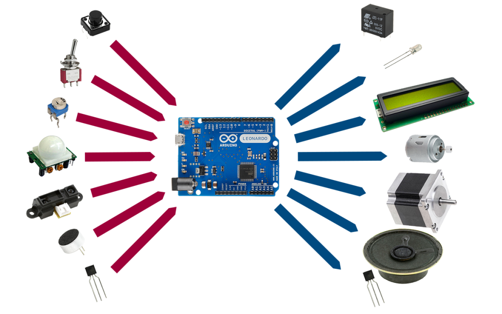
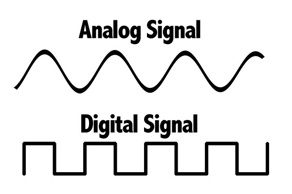

Arduino Introduction
Sommaire
- Vous / Moi
- Un arduino c'est quoi ?
- Digitale et analogique
- Structure du programme
- Exercices
Vous
- Qui êtes-vous ?
- Quelle est votre background ?
- Pourquoi êtes vous là ?
- Vos attentes ?
Moi
- 27 ans
- Ingénieur logiciel
- Bricoleur
- Curieux
- Partisan du monde Arduino
Aduino ?

Aduino ?
- Petit ordinateur (micro controleur)
- Connecte des objects physiques
- Programmable
- Facile d'accès
- Pas cher
- Open source / open hardware
- Grosse communauté
Aduino ?
Arduino vs Ordinateur
| Arduino | Ordinateur | Unité | |
|---|---|---|---|
| Processeur | 16 | 4000 | Mhz |
| Architecture | 8 | 64 | bit |
| Mémoire | 2 | 16'777'216 | Kb |
| Stockage | 32+1 | 1'073'741'824 | Kb |
| Prix | 10 | 800 | CHF |
| ... |
Arduino UNO
Arduino DUE

Arduino MINI

Arduino NANO

Arduino family

Possible: station météo

Possible: Un robot équilibriste

Possible: Traceur GPS

Possible: EggBot

Possible: Imprimante 3D

Impossible: Voiture autonome

Impossible: Console de jeux 3D
Digitale
- GND = 0V = LOW
- VCC = 5V = HIGH
Digitale
// write to pin 11
digitalWrite(11, HIGH);
digitalWrite(11, LOW);
// read from pin 12
digitalRead(12) == HIGH;
digitalRead(12) == LOW;
Digitale vs Analogique
Analogique
- Seulement lire
- 10bit resolution = 1024 possibilités
- 5v / 1024 = 0.004V = 4mV
Analogique
// read pin A0
// value [0;1023]
int value = analogRead(A0);
Diviseur de tension
 |
|
Diviseur de tension
|
 |
Potentiomètre
 |
 |
Photoresistor

PWM
Pulse Width Modulation

PWM
// write on pin ~9
// range [0;255]
int brigthness = 100;
analogWrite(9, brightness);
IOs (input/output)

Structure du programme

Setup
- Init IOs direction
- Init Serial
- Init communication
- Définir valeur initial
Setup
void setup()
{
pinMode(11, OUTPUT);
pinMode(A0, INPUT);
Serial.begin(9600);
digitalWrite(11, HIGH);
}
Loop
- Boule infinie
- Boule très rapidement
- Logique du programme
- Peut être mis en pause
Loop
void loop()
{
digitalWrite(12, HIGH);
delay(1000); // Wait for 1000 millisecond(s)
digitalWrite(12, LOW);
delay(500); // Wait for 500 millisecond(s)
}
Variables
- Nommée
- Stoque un état
- Peut être lue
- Peut être écrite
- Typée
Variables
int myVar = 10;
float withComa = 10.45;
bool allowed = true;
String chaine = "salut";
Functions
- Setup et loop sont des fonctions
- Nommée
- 0 ou plusieurs paramètres
- 0 ou un élément de retour
Functions
int multiply(int a, int b)
{
return a * b;
}
void sayHelloTo(String name)
{
Serial.print("Hello ");
Serial.print(name);
Serial.println();
}
Structure
- condition
- boucle
- ...
If
int age = 15;
if(age >= 18){
Serial.println("take a whisky");
}
If / else
int age = 15;
if(age >= 18){
Serial.println("take a whisky");
} else {
Serial.println("take a sirup");
}
If / else / else if
int age = 15;
if(age >= 18){
Serial.println("take a whisky");
} else if( age >= 16){
Serial.println("take a beer");
} else {
Serial.println("take a sirup");
}
For
int max = 10;
for( int i=0; i<10; i++){
Serial.print(i);
Serial.print(" ");
}
0 1 2 3 4 5 6 7 8 9
while
int buttonStatus = LOW;
while( buttonStatus == LOW ){
buttonStatus = digitalRead(11);
}
Serial.print("Button was finally pressed");
Exercices !
- Clignoter une led
- Lire un potentiomètre
- Lire un capteur (température/lumière)
- Atténuer une led
- Faire bouger un servo moteur
- Combiner les possibilités